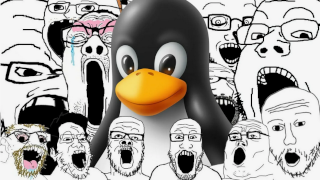

Многие разработчики и IT-специалисты, по роду своей деятельности должны искать решения и обмениваться информацией по сложным вопросам, которые возникают в следствие выполнения профессиональных обязанностей. К сожалению ситуация такова, что найти адекватное сообщество разработчиков невероятно сложно. И зачастую специалист, разбираясь в новой теме, попадает на ресурс, который ничего, кроме удовлетворения самолюбия местных аборигенов, дать человеку не может.

Эта страничка призвана помочь новичкам не тратить время на общение с троллями и людьми со странностями (а таких очень много). Как минимум, данная статья написана из-за необходимости предупредить интернет-пользователей о том, что может ждать наивного человека, решившего задать технический вопрос на профильном форуме.
Устройство токсичных сообществ
Токсичные сообщества часто мимикрируют под профессиональные. Костяк таких сообществ состоит из небольшой группы лояльно относящихся друг к другу "старых дружбанов", которые кошмарят всех остальных. Эти "старые дружбаны" либо являются модераторами ресурса, либо являются членами, которым позволено больше, чем всей остальной челяди.
Особо цинично выглядят сообщества, в которых сами создатели сообщества являются техническими троллями. Появление таких сообществ может идти двумя путями. Первый достаточно невинный - создатели становятся троллями в процессе нахождения в сообществе. Как они съехали в такое деструктивное состояние - вопрос отдельный. Второй путь совершенно неприглядный: сообщество целенаправленно создается, чтобы тешить свое самолюбие и унижать прихожан.
И конечно, зачастую, токсичность сообщества формируется извне силами пришлых троллей. Любой веб-ресурс вынужден балансировать между двумя крайностями: чтобы быть популярным и развиваться, нужна аудитория, чем больше, тем лучше, ибо аудитория появляется там, где нет драконовских правил. А там где нет драконовских правил, там размножаются тролли. Открутишь гайки - ресурс будет захлебываться от токсичности. Закрутишь гайки - потеряшь большую часть аудитории. Нахождение этого тонкого баланса - основная задача владельцев ресурса. Однако, зачастую, владельцы этими делами не занимаются. Казалось бы, при таких вводных ресурс должен был бы кануть в Лету, но все становится не так однозначно, если понять, что самих ресурсов - раз-два и обчелся. Пользователям просто некуда больше идти.
Список токсичных ресурсов рунета
Внимание! Следующий текст может содержать не очень нормативную лексику, принятую на описываемых ниже ресурсах. Это необходимо, что бы сразу понимать флёр и стиль общения, присутсвующий в нижеперечисленных сообществах.
Форум linux.org.ru (ЛОР)
Старейший форум рунета, переживший несколько волн троллинга и модераторского произвола. Состав аудитории - школота вперемежку со специалистами. Довели до инсульта даже бывшего водолаза. Вам оно надо?
В период с 2020 - 2024 г. модераторы начали серьезно закручивать троллям гайки. Однако это не мешает появляться новым и запрыгивать старым с обновленными никами.
Известные тролли - тысячи их.
Форум opennet.ru
То же самое что и ЛОР, но с тотальным присутсвием старых пердунов, что делает данный форум еще ужаснее. Хотите получить порцию дермеца прямо в харю в перемешку с брюзжанием о ваших никчемных компетенциях? Хотите прослыть недоспециалистом по мнению уважаемых экспертов из мира UNIX? Вам сюда!
Форум phpclub.ru
Если вы решили начать программировать на PHP, тогда добро пожаловать в клуб!
Известные тролли - персонаж Фанат. Паразитирует на посетителях форума в течении 20 лет.
Telegram-канал pgsql
Данный канал с кратким именем @pgsql или pgsql – PostgreSQL, согласно сайту rupostgres.org гордо именует себя как Сообщество русскоязычных пользователей PostgreSQL со всего мира. В модераторах и их дружбанах сидят люди, которые обожают вместо ответов на вопросы писать советы "прочитать документацию", а в случае, если человек самостоятельно не находит ответ, то и решения никакого не будет. Тех, кто посмеет указать что дискуссия идет не в русле обсуждения технических вопросов, модераторы исключают из канала.
Известные тролли - персонаж Grigory Smolkin (Григорий Смолкин).
Сообщество ALT Linux и форум forum.altlinux.org
Сообщество, состоящее из сотрудников компании Alt/Basealt и любителей дистрибутива ALT Linux. Казалось бы, что тут особенного? Ничего, просто практически каждый член сообщества считает своим долгом каленым железом выжигать любого заблудшего, который попробует усомниться в качестве дистрибутива ALT Linux и в адекватности принятых технических решений.
В лексике представителей ALT LInux Team широко представлены такие обращения к человеку, как "дятел", "свинота", "собака" и прочие термины животного мира, не брезгают использовать и элементы медицинских диагнозов: "даун", "врожденное слабоумие", "имбецил". Отношение к пользователям не из сообщества соответствующее: вас вполне могут даже не считать человеком. Цитата: "Я хорошо разбираюсь не только в животном мире, но и в людях. Людям, как правило, помогаю. Вот ведь... А животным - нет, я не техподдержака Базальта и вообще не в Базальте работаю, мне за общение с животным миром денег не платят".
Позиция владельцев и руководителей ALT Linux на то, что делают их коллеги на профильных ресурсах заключается в следующем: "они здесь ни при чем". Сообщество ALT Linux Team и форум на домене altlinux.org никакого отношения к экосистеме ALT Linux не имеет. Да, там присутствуют люди, работающие в "Базальт СПО". Да, сами владельцы и руководители присутсвуют на форуме. Но ведь как себя вести - это личное дело каждого. Каждый самовыражается как может. Не хотите находиться в токсичной среде, но по воле обстоятельств вам приходится пользоваться ALT Linux? Заплатите за техподдержку, и вам те же люди, которые поливали вас говном, начнут любезно объснять как решить ту или иную проблему дистрибутива.
В настоящий момент градус токсичности на форуме снизился просто по той причине, что сами тролли устали. Кроме того, форум подвергался переезду, и часть переписки поисчезала, а что-то целенаправленно выпилили модераторы во избежание.
Известные тролли - персонажи Skull, AS, некогда известный wRAR и прочие. Периодически делают вылазки на LOR и там тешат свои амбиции.
Всеми вышеперчисленными ресурсами пользоваться крайне не рекомендуется, если стоит задача сохранить свою психику и ментальное здоровье.
Хинт! В 2024 году львиную долю проблем прекрасно решают нейронные сети. Если нет желания общаться с людьми, имеющими девиации в поведении, рекомендуется общаться с нейросетями: это культурные, внимательные, очень эрудированные и безотказные собеседники. Самая главная проблема только одна - надо уметь отличать галлюцинации нейросетей от реальных сведений о предмете.
Список пополняется, редактируется, дополняется .